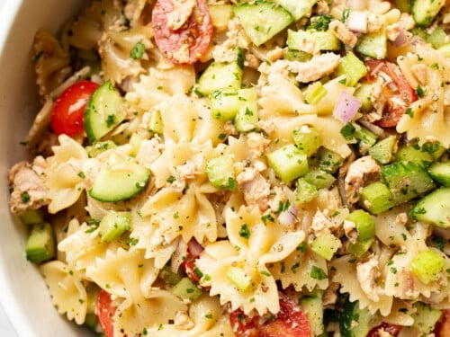

Tuna Pasta Salad

Description
Another easy to make recipe, good for lunch or a lazy dinner. Creamy mayo combines with tuna and pasta to make deicious concoction. Add veg for crunch and health!
Ingredients
- 2 tins tuna, drained
- 2 or 3 heaping Tbsp mayonnaise
- Enough pasta for 2 people. I use the spiral tubes but you can use whatever shape you like
- 1 cucumber, chopped
- 2 or 3 sprigs scallions, chorped
- 1 brocolli crown, chopped
- salt and pepper to taste
- Paprika could be nice? (optional)
Method
- Cook the pasta according to the package
- Meanwhile, scoop the tuna into a small bowl and add the mayo. You can adjust the amount of mayo to your own taste
- Also add the veg, salt and pepper, and whatever other herbs you think will taste good. Now stir to combine
- Once the pasta has cooked, drain and rinse with cold water. Replace the pasta back into the pan or other medium-sized bowl
- Add the tuna-mayo mixture and stir to combine
- Place inside your picnic basket. Go to the park. Eat your lovely lunch, greedily